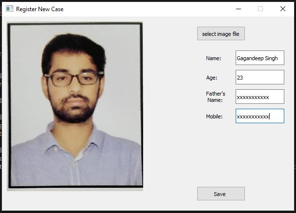
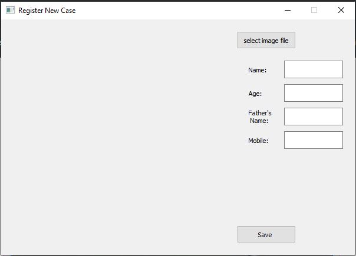
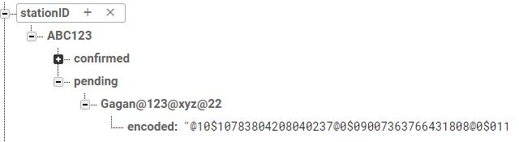
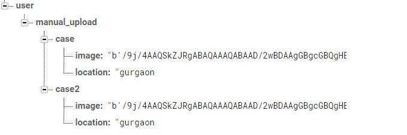

Let's assume that we have to design a project for Police to help them locate missing people fast. Here, we are going to build an Desktop Application using Python through which police will register complaint. We'll see the specifications
of the application in a bit.
We'll also need a Database where all the complaints will be stored. We are going to use firebase here because it is easy to follow and doesn't have to be deployed anywhere.
Last we'll build an android app which will be open can can be used by anyone.
Desktop Application
This is how the application is going to look like.

New Case - Whenever a person goes missing this part will be used. It registers case with photo of the person missing and some detail like name, father's name, etc.
Refresh - This button is going to train the KNN Classifier. All the cases that have been registered will be used to train the classifier.
Match - This button will download all the photos submitted through the android app and will run predict method on each photo. If any match is found then it will displayed.
Confirmed Cases - All the cases that have been confirmed will be displayed here.
New Case Page
The New case button is going to open another GUI window which will take information like name of person missing, father's name.

New Case GUI Window
New Case - Whenever a person goes missing this part will be used. It registers case with photo of the person missing and some detail like name, father's name, etc.
Refresh - This button is going to train the KNN Classifier. All the cases that have been registered will be used to train the classifier.
Match - This button will download all the photos submitted through the android app and will run predict method on each photo. If any match is found then it will displayed.
Confirmed Cases - All the cases that have been confirmed will be displayed here.
Android Application
The android Application will just have the functionality to click pictures and upload them to firebase along with the location.
New Case GUI Window
Understand how control flows inside project
What is happing in the name of facial recognization?
We are using dlib to generate 68 unqiue facial key points. A total of 136 points are generated (2 x 68). These points are floating point numbers with a precision of about 10. These points are converted to a string by a simple encoding.
Database Schema for Desktop Application

Initially the case will be stored in pending. Details like name, father's name, age and mobile number are embedded into single key and it is used as unique key.
The 136 facial key points are stored in value of encoded (key).
ABC123 is the station id. A unqiue station id will be provided to every station.
Database Schema for Android Application

manual_upload is the email of the person who has submitted a case.
cases are different submissions by the same user.
Initially the case will be stored in pending. Details like name, father's name, age and mobile number are embedded into single key and it is used as unique key.
The 136 facial key points are stored in value of encoded (key).
ABC123 is the station id. A unqiue station id will be provided to every station.
Algorithm for matching faces
KNN Algorithm is used here for matcing faces. KNN forms k groups using the cases that have been registered. For label we are using the encoded unique key that we created earlier.
Setting Environment for Project
Requirements
dlib 19 +
PyQt5
OpenCV 3+
Firebase Admin
Steps -
dlib package is little tricky to install. You have two option to install it. Either install miniconda (anaconda) or compile dlib from source using Visual Studio. The first option seems to do the task.
The another way to avoid dlib conflict is by using Docker. In file face_encode.py you'll see a option to use docker. I've been working on it but it hasn't been fully tested.
The next step is to setup firebase
The reason to use firebase is because it is very easy to setup.
Open firebase.google.com
Create a new project
Go to Databse and then realtime database
Copy Poject URL and download key from project setting.
Replace Project URL and key location in db_operations file
What about the android app?
I couldn't find the source code for the android file. But I created a python script through which you upload photos. It will always be better if you could build android app for it.
How to start the project?
Clone the Repository
Go inside the folder
Open cmd in the same directory
Activate conda environment (if you are using environment other than base)
Type python main.py
If everything is fine you'll see a GUI window in few seconds.